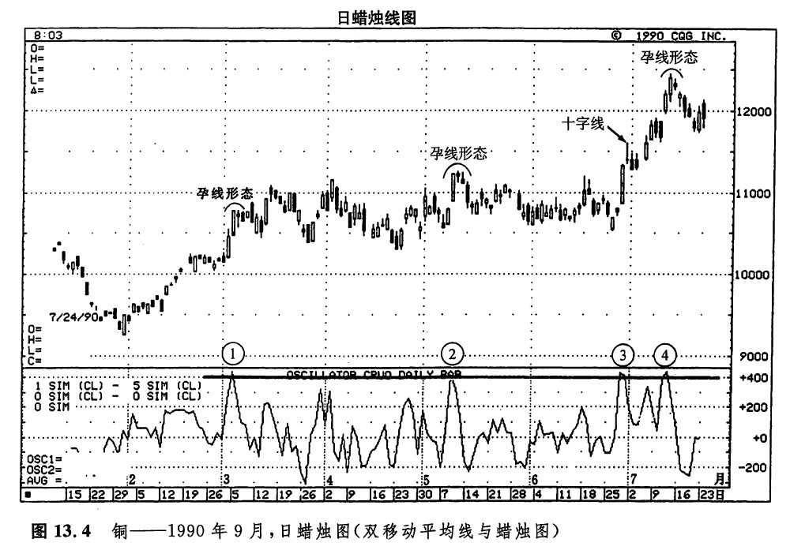
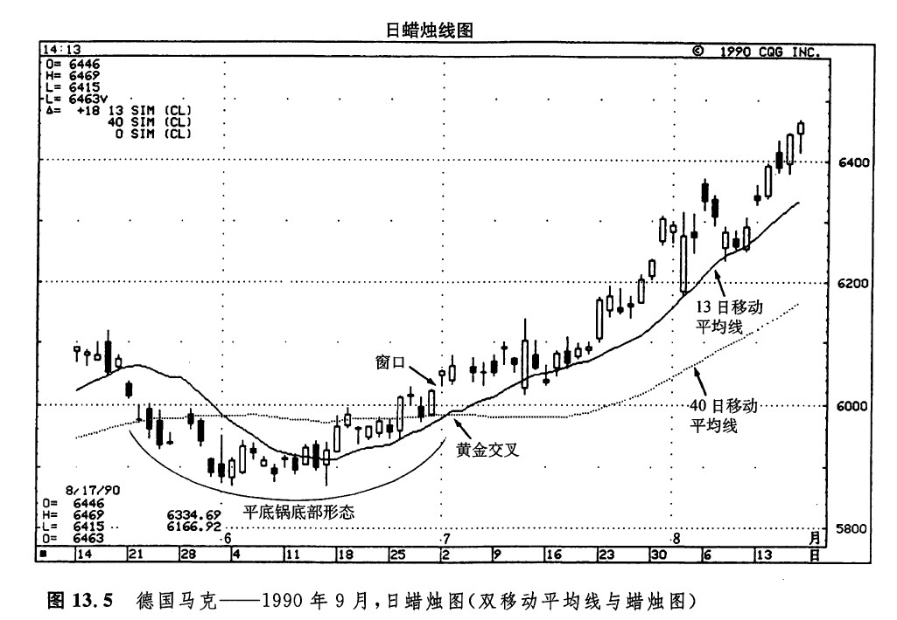
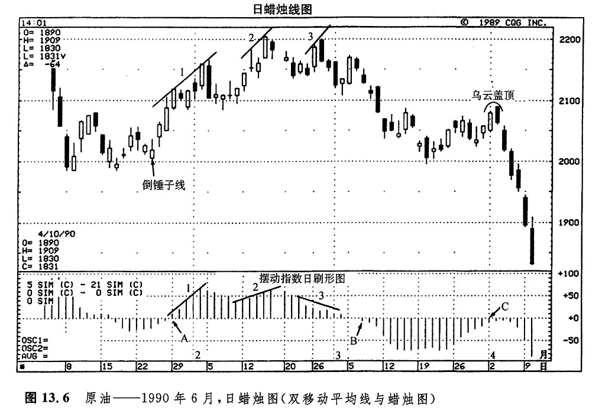
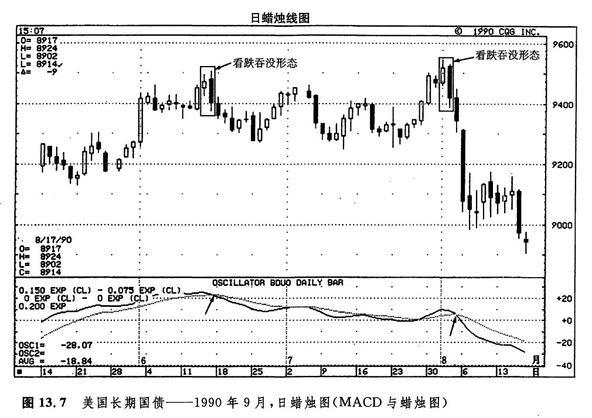
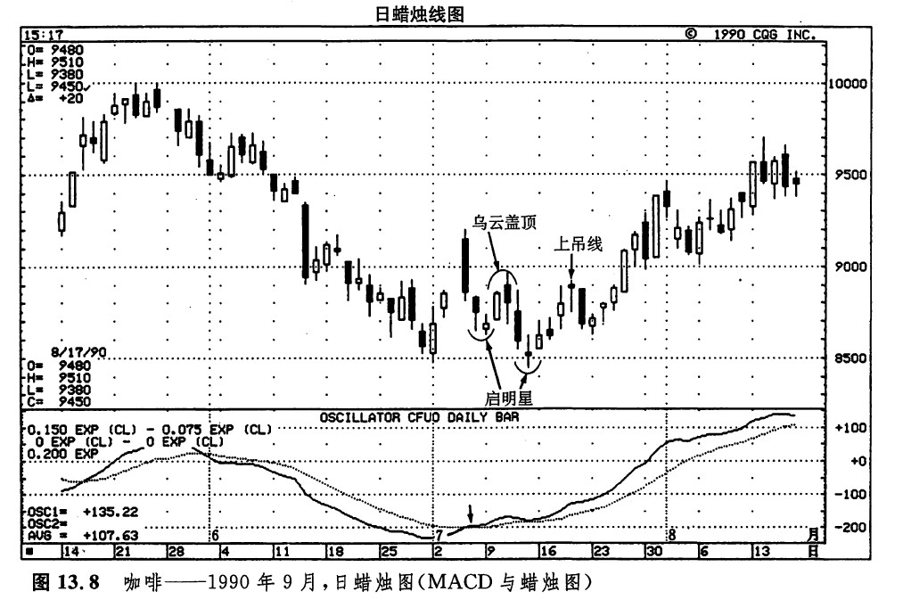

两根移动平均线组合在一起的用法有很多种类。其中之一，是将它们构造成一个超买／超卖指标，也就是摆动指数。把较短期的移动平均线减去较长期的移动平均线，就得到了这个摆动指数的值。该指数既可以是正值，也可以为负值。当它的数值大于0时，就意味着较短期的移动平均线处在较长期的移动平均线的上方。当它的数值小于0时，就意味着较短期的移动平均线处在较长期的移动平均线的下方。这类做法的实质，是将短期的市场力度同长期的市场力度进行比较。正如我们前面所讨论的，因为短期移动平均线对最近的价格变化更加敏感，如果短期移动平均线相对来说较大幅度地高于（或低于）长期移动平均线，那么我们就认为市场处于超买状态（或超卖状态）。
双移动平均线的第二种用法是，通过观察短期移动平均线与长期移动平均线的交叉，获得交易信号。如果短期的移动平均线向上或向下穿越了长期移动平均线，可能就是趋势变化的一个早期警告信号。举例来说，如果短期移动平均线向上穿越了长期移动平均线，这就是一个看涨信号。在日本，这样的移动平均线交叉信号称为黄金交叉。于是，如果3天移动平均线向上穿越了9天移动平均钱，则构成了一个黄金交叉。与上述相反的情形，在日本的术语中称作死亡交叉。当短期移动平均线向下穿越长期移动平均线时，就构成了一个看跌的死亡交叉信号。
有些技术分析者监测当前的收市价与5天移动平均线之间的相互关系，以此构成一个短期的超买／超卖指标，如图13.4所示。举个例子。如果铜的5天移动平均值为1.10美元，当日的收市价为1.14美元，那么，铜市场就具有0.04美元的超买程度。在本图所示的实例中，下半图的曲线就是由当前的收市价与5 天移动平均线的差构成的。从这张图表可以看到，通过这种双移动平均线方法（可以将收市价看成时间参数为1的移动平均线——译者注）我们就能够了解，当它达到400点的超买水平（也就是说0.04美元）时，市场就变得较为脆弱——特别是在同时具备看跌的蜡烛图验证信号的情况下。在点①所示的期间，下图的数值处于超买状态，同时上图有一个孕线形态。在点②所示的期间，下图的超买状态撞上了另一个孕线形态；在点③所示的期间，超买状态碰到了一根十字线；在点④处，超买状态又遇到了一个孕线形态。市场既可以通过抛售行情，也可以通过横向伸展行情来释放其超买状态。在本例中，在点①和③所示的期间，超买状态是通过横向伸展行情而得以释放的。在点②和④所示的期间，则分别借助了两段抛售行情。通常，当市场处于超买状态时，不应当卖出做空。当然，多头者面对这种市场状态，应当采取保护性措施。在超卖的市场上，则应当采取与上述相反的应对措施。

我们也可以把两条移动平均线同时绘制在相应的价格图表上。正如前面所说的，当较短期的移动平均线向上穿越了较长期的移动平均线时，构成了一个看涨信号，日本分析师称之为黄金交叉。在图13.5中，既有一个看涨的黄金交叉，也有一个平底锅底部形态。这个平底锅底部形态得到了7月2日的窗口的验证。请注意，这个窗口在7月上半个月是如何起到支撑作用的，还请注意，图示的较短期移动平均线是如何在市场的上涨行情中起到支撑作用的。

我们还可以利用两条移动平均线之差作为寻找相互验证／相互背离信号的工具。当价格上升时，技术分析师希望看到，短期移动平均线与长期移动平均线之间的距离也不断地扩大。这就意味着，表示两条移动平均线之差的曲线处于正值区内，并且其数值逐步增大。如果价格上涨，而短期移动平均线与长期移动平均线之间的差距却在缩小，那就表明，短期的市场力度正难以为继。这个迹象暗示上涨行情可能行将结束。
在图13.6中，我们利用刷形图的形式显示了两条移动平均线之差。在点1和2所示的期间里，一方面价格在上涨，另一方面短、长期移动平均线的差距也在扩张，从而呼应了市场趋势。这就说明，较短期的移动平均线比较长期的移动平均线上升得更快。这是个好的征兆，显示当前的上升趋势仍将持续。在点3所示的期间内，市场碰到了问题。从2月23日开始，市场形成了一轮幅度达0.50美元的上涨行情，但是与此相对照，其移动平均线之差却处在收缩过程中。这就反映出短期市场力度的减弱。雪上添霜的是，此处还形成了一个乌云盖顶形态，因此市场已经较为脆弱，容易酿成价格回抽行情。

这张刷形图也能够揭示短期移动平均线向上或向下穿越长期移动平均线的交叉信号。当刷形图处于零线之下时，短期移动平均线位于长期移动平均线的下方。当刷形图处于零钱之上时，短期移动平均线位于长期移动平均线的上方。因此，当摆动指数向下穿越零线时，代表了一个看跌的死亡交叉信号；当它向上穿越零线时，代表了一个看涨的黄金交叉信号。
在A点所示的时间上，出现了一个黄金交叉信号。在形成该黄金交叉数日之前，市场还产生了一根看涨的倒锤子线。在B点处，发生了一个死亡交叉信号。在点C所示的期间，价格曾有所上涨，但是短期移动平均线却不能穿越到长期移动平均线的上方（这就是说，该摆动指数维持在零线之下）。另外，4月2日和3日，还形成了一个乌云盖顶形态，它也发出了看跌信号。
在MACD方法中，也用到两条曲线。在图13.7的下半图上，显示了这样的两条曲线。其中的实线起伏较为频繁，这是信号线。当这条信号线向下穿越图示的较平缓的虚线时，构成卖出信号。在这一实例中，有两个看跌的吞没形态，它们的看跌意义都得到了对应的MACD指标看跌交叉信号的进一步印证（请看箭头所指之处）。

如图13.8所示，在这张MACD图上，7月初（请看箭头所指之处），信号线向上推过了另一条较平缓的曲线。这就给出了一条引人注目的线索，说明市场也许正形成一个底部。再看看蜡烛图。第一个启明星形态的看涨意义被之后的乌云盖顶形态抵销了。由该乌云盖顶形态开始的下跌过程终止于另一个启明星形态。后来，虽然由于图示的上吊线的出现，市场形成了短暂的回落，但是市场的上升力度很快就恢复了。

下一篇：第十四章 蜡烛图与摆动指数
上一篇：移动平均线的用法
copyright @ 2018 制作：汉钛电线，Hingtak Wire & Cable LLC